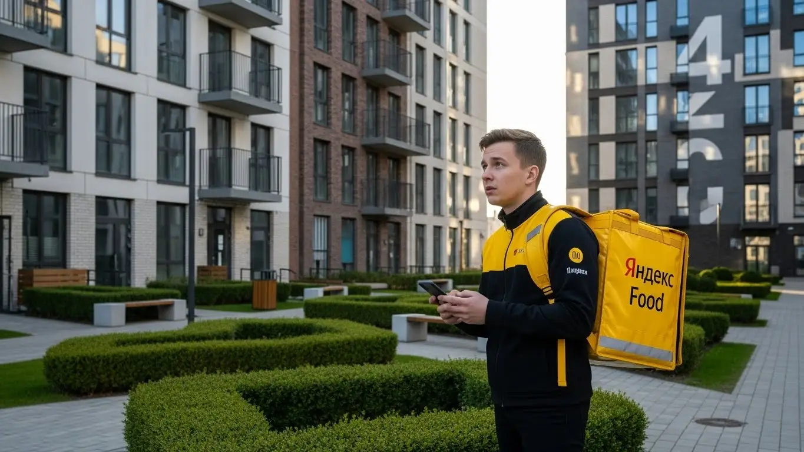
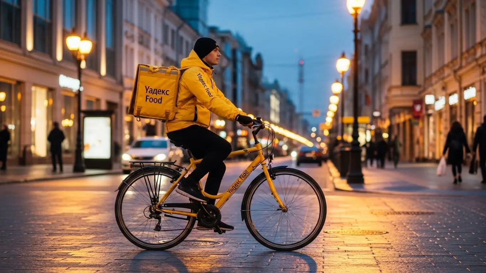
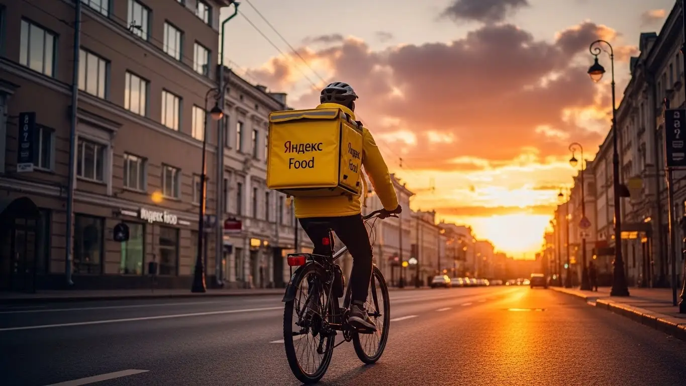
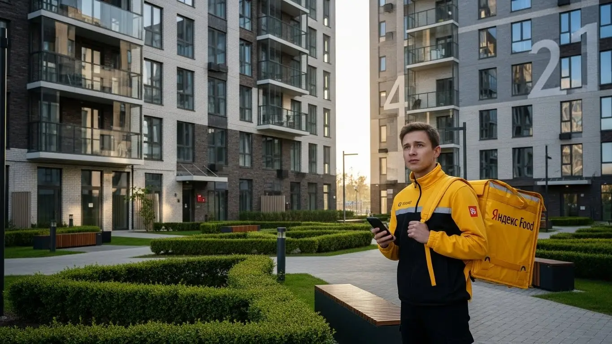

Доход курьера Яндекс Еда во Фрязино 2025-2026: разбор условий

- Работа курьером Яндекс Еды в Фрязино: для кого эта вакансия и что вы получите
- Сколько вы будете зарабатывать курьером в Фрязино: калькулятор дохода и разбор выплат
- Реальный заработок курьера в Фрязино: смены и месячный доход
- График работы и форматы занятости
- Требования к кандидату и документы
- Самозанятость, налоги и юридическая чистота
- Пошаговое оформление и первый выход на линию в Фрязино
- Пешком, на вело или на авто: что выгоднее в Фрязино
- Районы, маршруты и «топовые» зоны заказов в Фрязино
- Безопасность, страховка, штрафы и оплата простоя
- Плюсы и возможные минусы работы курьером в Фрязино
- Реальные истории и отзывы курьеров из Фрязино
- Ответы на главные вопросы о работе курьером Яндекс Еды в Фрязино
- Короткие ответы на главные вопросы
- Итоги и твой первый шаг
Все города
Здорово, коллега! Думаешь, работа курьером Яндекс Еда во Фрязино — это просто крутить педали или руль и получать деньги на карту? Я тоже так думал, пока не столкнулся с реальностью: пробки на проспекте Мира в час пик, убитые дороги в частном секторе и заказы, которые ведут тебя в такие дворы, где и навигатор сходит с ума. Многие видят только желтый рюкзак и обещания высокого дохода, но боятся штрафов, низких заработков и того, что «убьют» свой транспорт за пару месяцев. Давай без рекламной шелухи разберёмся, что ждёт тебя на улицах нашего города на самом деле.
Поверь, большинство новичков у нас во Фрязино «сдуваются» в первый же месяц по одной причине — они не понимают местной специфики. Они не считают реальные расходы на бензин или амортизацию велосипеда, не знают, как работает приоритет и почему в одном районе заказов густо, а в другом — пусто. В итоге теряют время у ТЦ «Спутник» в ожидании чуда, вместо того чтобы сместиться в спальные районы, где вечером самый сок. Эта работа — не просто доставка, это стратегия, особенно в таком компактном, но хитром городе, как наш.
В этом гиде я разложу всё по полочкам. Мы разберём, на чём лучше работать именно во Фрязино — пешком, на велосипеде или на своём авто. Посчитаем, сколько РЕАЛЬНО чистыми падает в карман за смену с учётом всех расходов и налогов. Я покажу на карте «рыбные» места и «мёртвые» зоны, расскажу, как погода и сезоны влияют на доход, за что на самом деле штрафуют и как этого избежать. Сравним условия с другими доставками, которые есть в городе, и посмотрим на живые отзывы местных ребят. Если вы уже готовы попробовать и хотите сразу увидеть актуальные цифры и подать заявку, вся информация собрана на специальной странице, где детально описана работа курьером Яндекс Еда в Фрязино.
Меня зовут Алексей. Я сам откатал не одну тысячу километров по Фрязино с жёлтым рюкзаком, а сейчас у меня свой небольшой таксопарк-партнёр, так что я вижу всю эту кухню с двух сторон — и со стороны курьера, и со стороны партнёра. Никакой воды и обещаний золотых гор. Только мясо, цифры и советы, которые сэкономят тебе нервы и деньги. В общем, пристёгивайся (или проверяй давление в шинах), сейчас всё покажу наглядно.
Прежде чем нырять в детали, давай быстро пробежимся по ключевым темам статьи. Это поможет тебе сориентироваться.
Что ты точно узнаешь из этого разбора
В этой статье ты ТОЧНО узнаешь:
- Сколько РЕАЛЬНО можно заработать во Фрязино за смену на авто, велосипеде или пешком, уже за вычетом налогов?
- В каких районах Фрязино и в какое время суток больше всего заказов с высокими коэффициентами?
- Что выгоднее выбрать во Фрязино — пеший формат, велосипед или авто, и как погода влияет на этот выбор?
- За что на самом деле могут понизить рейтинг или ограничить доступ к заказам и как этого избежать?
- Как работает оплата простоя, если заказов мало, и почему это главная фишка Яндекса?
- Как за один день пройти оформление от анкеты до первого заработка?
А если тебе некогда читать всю статью — переходи сразу к заключению, где ты найдёшь короткие ответы на все эти вопросы и указания, в каких разделах искать подробности.
А вот наглядная инфографика, чтобы сразу увидеть основные цифры по работе в нашем городе.
Работа курьером в Фрязино: ключевые цифры
Работа курьером Яндекс Еды в Фрязино: для кого эта вакансия и что вы получите
Кому подойдёт эта работа в Фрязино
Эта работа, по сути, универсальна. Если тебе нужны деньги и ты готов двигаться — это твой вариант. В первую очередь, это отличная подработка для студентов. График можно подстроить под учёбу, выходить на пару часов после пар и иметь свои карманные деньги, не прося у родителей. Заказов в городе хватает, особенно по вечерам и в выходные.
Также это идеальный вариант для тех, у кого уже есть основная занятость, но нужны дополнительные средства. Можно выходить на смены в свои выходные или после работы, чтобы закрыть кредит или накопить на что-то.
Никакого опыта не требуется — всему научат за полчаса. Если у тебя есть права и машина, можно стать водителем-курьером и доставлять более дорогие и дальние заказы. Главное, что такие условия работы ценят те, кому важны ежедневные выплаты и свобода планировать своё время.
Главные преимущества для жителей районов Центральный, Полевая, Чижово
Главный плюс для местных — возможность работать буквально в своём дворе. Тебе не нужно тратить час-полтора на дорогу до «офиса». Живёшь, например, в Центральном микрорайоне на проспекте Мира — можешь выбрать эту же зону в приложении и доставлять заказы из ближайших кафе и магазинов. Это экономит и время, и деньги на проезд.
Это правило работает и для других районов. Если твой дом в микрорайоне Полевая или в Чижово (микрорайон №6), ты можешь начинать смену прямо от своего подъезда. Система «Яндекс Про» будет предлагать тебе заказы в первую очередь из ближайших точек. Это значит, что ты будешь отлично ориентироваться на местности, знать все короткие пути и дворы, что напрямую влияет на скорость доставки и, соответственно, на твой заработок.

Краткое обещание по доходу и условиям
Давай по-честному и без пустых обещаний. Во Фрязино активный курьер за смену 8–10 часов может заработать от 2 500 до 4 000 рублей. Если рассматривать это как подработку на несколько часов в день, то выходит 1 000 – 1 500 рублей. В месяц при полной занятости вполне реально выходить на доход в 50 000 – 85 000 рублей, особенно если ты на авто и берёшь выгодные слоты.
Ключевые условия работы простые: ты сам выбираешь, когда и сколько работать, — это и есть свободный график. Деньги приходят на карту каждый день, не нужно ждать конца месяца. Начать можно без опыта, а для работы понадобится только смартфон и статус самозанятого, который оформляется онлайн за 10 минут. Всё покажут и расскажут в процессе короткого обучения.
Сколько вы будете зарабатывать курьером в Фрязино: калькулятор дохода и разбор выплат
Из чего складывается доход курьера
Твой заработок — это не просто фиксированная ставка, а сумма нескольких составляющих. Во-первых, это базовая оплата за каждый выполненный заказ. Во-вторых, к ней добавляется доплата за расстояние — чем дальше везти, тем больше денег. В часы пик, плохую погоду или в районах с высоким спросом (например, в центре вечером в пятницу) включаются повышающие коэффициенты, которые могут умножить стоимость заказа в 1,5–2 раза.
Кроме того, есть бонусы за выполнение определённого количества заказов в день или неделю. Не стоит забывать и про чаевые — они полностью твои. Но самое важное, что отличает Яндекс от многих других сервисов, — это оплата простоя. Если ты вышел на плановый слот, а заказов мало, сервис всё равно начислит тебе минимальную гарантированную сумму. Иногда также действует компенсация проезда на общественном транспорте, если заказ очень дальний.
Как пользоваться калькулятором дохода
Калькулятор на сайте — это удобный инструмент, чтобы прикинуть свой возможный заработок. Пользоваться им просто. Сначала выбери свой город, в нашем случае — Фрязино. Затем укажи, как планируешь доставлять: пешком, на велосипеде или на своём авто. От этого выбора сильно зависит потенциальный доход, так как водитель-курьер может выполнять больше заказов и на большие расстояния.
Далее, двигай ползунки, чтобы указать, сколько часов в день и сколько дней в неделю ты готов работать. Система сразу покажет тебе примерный диапазон твоего дневного и месячного дохода. Понятно, что это прогноз, а не твёрдое обещание. Реальный заработок будет зависеть от спроса, погоды и твоей скорости, но калькулятор даёт хорошее представление о том, на какие цифры можно ориентироваться.
Калькулятор дохода курьера в Фрязино
Это примерный расчёт на основе средней ставки в городе. Реальный доход зависит от спроса, бонусов и вашего рейтинга.
Примеры расчёта для пешего, вело- и автокурьера в Фрязино
Чтобы было понятнее, давай разберём на конкретных примерах для Фрязино.
- Пеший курьер. Допустим, ты студент и выходишь на 3–4 часа по вечерам в будни. Работаешь в центре, в районе проспекта Мира, где много кафе. За вечер ты успеешь сделать 5–7 заказов. Твой доход за смену составит примерно 1200–1600 рублей.
- Велокурьер. Ты работаешь по выходным, по 6–8 часов в день, и катаешься между спальными районами, например, от улицы Полевой до микрорайона №6. На велосипеде ты быстрее, поэтому делаешь 10–15 заказов за смену. В хороший день твой заработок может достигать 2800–3500 рублей.
- Водитель-курьер на авто. Ты работаешь почти полную неделю, выбирая самые выгодные слоты (вечера, выходные, плохая погода). На машине можно брать заказы по всему городу и даже в пригород, например, в Новофрязино. Это могут быть как доставки из Яндекс Еды, так и посылки из Яндекс Доставки. За 8-часовую смену твой заработок может составить 4000–5000 рублей и больше, особенно если поймаешь высокий спрос и бонусы.
Реальный заработок курьера в Фрязино: смены и месячный доход
Диапазон дохода для подработки и полной занятости
Давай сразу к главному — к деньгам. Без прикрас и обещаний золотых гор, только реальные цифры по Фрязино. Твой доход от работы курьером в Яндекс Еде напрямую зависит от того, сколько часов ты на линии и как передвигаешься. Если для тебя это подработка, чтобы закрыть кредит или накопить на что-то, выходя на 2–4 часа в день, то расклад примерно такой. Пеший курьер или на велосипеде за вечер сделает 800–1500 рублей. Курьер на автомобиле за то же время — 1200–2000 рублей, потому что успевает взять больше заказов, в том числе и на дальние расстояния.
Если же ты рассматриваешь эту работу как основную и готов вкладывать по 8–10 часов в день, то цифры совсем другие. Пеший или велокурьер при полной занятости во Фрязино стабильно выносит 2500–4000 рублей за смену. В месяц это выливается в 60 000–90 000 рублей. Водитель-курьер на своём авто при таком же графике может зарабатывать от 4000 до 6000 рублей в день, а иногда и больше. Соответственно, месячный доход при полной занятости может достигать 90 000–130 000 рублей. Это уже чистыми, после вычета налога самозанятого.
Как район, время суток и погода влияют на доход
Запомни простое правило: твой заработок — это не только часы, но и голова на плечах. Нужно понимать, где и когда быть. Самые «жирные» часы — это пики спроса. Во Фрязино, как и везде, это обеденное время с 12:00 до 14:00 и вечерний пик с 18:00 до 21:00, когда люди возвращаются с работы и заказывают ужин. В выходные, особенно в пятницу и субботу вечером, спрос максимальный. В это время в приложении «Яндекс Про» появляются зоны с повышенными коэффициентами — они подсвечиваются фиолетовым. Работать в такой зоне выгоднее в полтора-два раза.
Погода — твой лучший друг. Как только начинается дождь, снегопад или сильная жара, большинство людей предпочитают остаться дома. Количество заказов на доставку резко растёт, а число курьеров на линии может уменьшиться. Сервис сразу же поднимает коэффициенты, чтобы мотивировать тех, кто готов работать. Кроме того, в плохую погоду клиенты чаще оставляют хорошие чаевые — из благодарности, что ты доставил их заказ, пока они сидели в тепле и уюте. Поэтому не бойся непогоды, а готовься к ней и выходи зарабатывать.
Советы по увеличению заработка от опытных курьеров
Чтобы не просто откатывать часы, а реально максимизировать доход, есть несколько проверенных фишек. Во-первых, всегда планируй свои выходы под пиковые часы. Лучше отработать 4 часа вечером в пятницу, чем 6 часов днём в понедельник — заработаешь больше, а устанешь меньше. Во-вторых, изучи карту города в «Яндекс Про». Смотри, где концентрируются рестораны и торговые центры, например, в районе проспекта Мира или ТРЦ «Фрязинский Пассаж». Именно там будет эпицентр заказов.
Не зацикливайся на одном типе доставки, если есть возможность. Велосипед идеален для быстрых доставок по спальным районам вроде микрорайона №6, где на машине можно застрять во дворах. Автомобиль же незаменим для крупных заказов из гипермаркетов или доставок в пригород. И главный совет — будь вежлив и аккуратен. Простая улыбка и пожелание приятного аппетита могут принести тебе 100–200 рублей чаевых с одного заказа, а за день это складывается в приличную сумму.
Вот пример из практики. Был у нас парень, начинал на велосипеде, выходил на линию хаотично, когда было свободное время. За 4 часа получал рублей 700–800. Я ему посоветовал перестроить график: выходить строго с 18 до 22 в будни и брать длинную смену в субботу. Он стал работать в зонах повышенного спроса в центре Фрязино. В итоге за те же 4 часа в будний вечер его доход вырос до 1500–1800 рублей. Просто за счёт того, что он начал работать с умом, а не просто крутить педали.
В общем, твой заработок во Фрязино — это не лотерея, а вполне прогнозируемая вещь, если понимать механику. Главное — не лениться и использовать все инструменты, которые даёт сервис. Мой совет: всегда следи за картой спроса в приложении и не бойся работать в пиковые часы и плохую погоду — именно тогда делаются самые большие деньги.

График работы и форматы занятости
Подработка после учёбы или основной работы
Свободный график — это, пожалуй, главный козырь работы курьером. Ты сам себе начальник и решаешь, когда выходить на линию. Это идеально подходит, если тебе нужна подработка, а не каторга с девяти до шести. Вот пара реальных сценариев, как это работает у ребят во Фрязино.
Первый пример — студент местного филиала МИРЭА. Учёба у него до обеда, потом пара часов на свои дела. С 18:00 до 22:00 он садится на велосипед и развозит заказы Яндекс Еды. В будни получается 3-4 таких выхода. В субботу он берёт полную смену на 8 часов. В итоге, не напрягаясь и не в ущерб учёбе, он спокойно делает 30 000–35 000 рублей в месяц. Этого с лихвой хватает на личные расходы и помощь родителям.
Второй сценарий — мужчина, который работает днём в офисе. У него есть машина и желание быстрее закрыть ипотеку. Он выходит на линию в пятницу вечером после работы, а также в субботу и воскресенье на 6–8 часов. В выходные он берёт заказы из крупных магазинов и дальние доставки, которые хорошо оплачиваются. Такая подработка на авто приносит ему дополнительные 40 000–50 000 рублей в месяц к основной зарплате. Он говорит, что это лучше, чем сидеть на диване перед телевизором.
Полная занятость: как выглядит типичный день курьера
Если ты решил сделать доставку своей основной работой, твой день будет выглядеть более структурированно, но всё так же под твоим контролем. Типичный день курьера на полной занятости во Фрязино начинается не в 7 утра, а ближе к 10:00–11:00. В это время начинают поступать первые заказы из кафе и магазинов. Сначала можно поработать в своём районе, например, в микрорайоне №1, развозя утренний кофе и завтраки.
К 12:00 начинается обеденный пик, и лучше сместиться в центр, где много офисов и ресторанов. С 12 до 15 часов идёт плотный поток заказов, практически без перерывов. После обеденного ажиотажа наступает небольшое затишье. Это время опытные курьеры используют для собственного обеда и отдыха. Можно посидеть в машине, выпить кофе. А уже с 17:30–18:00 начинается вечерний пик, который длится до 22:00. Это самое прибыльное время. Заказы идут один за другим, коэффициенты высокие. Отработав вечер, можно спокойно ехать домой с хорошей выручкой за день.
Как планировать слоты и выходы через приложение «Яндекс Про»
Вся твоя работа управляется через приложение «Яндекс Про». Там есть два основных формата выхода на линию: свободные слоты и плановые. Свободный слот — это когда ты просто нажимаешь кнопку «На линию» и начинаешь работать в любое удобное время. Это максимум гибкости, но без гарантий.
Плановые слоты ты бронируешь заранее на определённое время и в определённой зоне. Их преимущество в том, что часто на них действует гарантированный минимальный доход. Даже если заказов будет мало, сервис доплатит тебе до определённой суммы. Планирование — ключ к стабильному доходу. Заходи в приложение, смотри расписание слотов на неделю вперёд и выбирай самые выгодные — вечерние, в выходные дни.
Очень важно не опаздывать на плановый слот и отрабатывать его до конца. Это напрямую влияет на твой рейтинг и уровень приоритета в системе. Чем выше твой рейтинг, тем больше заказов ты получаешь, особенно в часы высокого спроса. Так что относись к этому серьёзно: выбрал слот — будь добр приехать вовремя.
Вот тебе кейс. Пришёл к нам парень, раньше работал на стройке, решил попробовать себя в Яндекс Доставке на авто. Первую неделю выходил как попало, через свободные слоты. Зарабатывал немного, жаловался, что заказов мало. Я ему показал, как работает планирование в «Яндекс Про». Мы сели и забронировали ему на неделю вперёд плановые слоты в зонах с высоким спросом, в основном на вечер и выходные. Уже на второй неделе его доход вырос почти вдвое. Он понял, что система поощряет надёжных и пунктуальных курьеров.
В итоге, график — это твой инструмент. Ты можешь сделать его абсолютно свободным для подработки или чётко спланированным для полноценной работы. Мой совет: начни со свободных выходов, чтобы освоиться, а потом переходи на плановые слоты. Это даст тебе стабильность и предсказуемый доход, что для основной работы крайне важно.
Требования к кандидату и документы
Возраст, гражданство и базовые условия
Давай сразу по делу, без лишней бюрократии. Чтобы стать курьером Яндекс Еды, не нужно быть олимпийским чемпионом, иметь три высших образования или опыт работы. Требования простые и понятные. Во-первых, возраст — строго с 18 лет. Это связано с материальной ответственностью и полной дееспособностью, так что тут без вариантов. Во-вторых, гражданство — подойдёт паспорт РФ или одной из стран ЕАЭС (Беларусь, Казахстан, Армения, Кыргызстан).
Что касается физической формы, то здесь всё зависит от выбранного тобой способа доставки. Если планируешь работать пешим курьером, будь готов много ходить. Для велокурьера важна выносливость, особенно если во Фрязино есть районы с перепадами высот. Автокурьеру физически проще, но требуется внимательность на дороге. Главное — отсутствие медицинских противопоказаний к физическим нагрузкам. Никто не заставит тебя бегать марафоны, но провести на ногах или в седле несколько часов подряд ты должен быть в состоянии.
Какие документы нужны для работы курьером
Чтобы всё прошло гладко и быстро, подготовь документы заранее. Список короткий, и скорее всего, всё уже у тебя под рукой. Тебе не придётся бегать по инстанциям и собирать кипу бумаг, как при устройстве на завод.
Вот что понадобится:
- Паспорт. Основной документ для подтверждения твоей личности, возраста и гражданства. Убедись, что он не просрочен.
- ИНН (Идентификационный номер налогоплательщика). Он нужен для регистрации в качестве самозанятого и официальной уплаты налогов. Если не помнишь свой номер, его легко узнать на сайте ФНС за пару минут.
- Банковская карта на твоё имя. Подойдёт карта любого российского банка (МИР, Visa, Mastercard). На неё будут приходить твои заработанные деньги, поэтому важно, чтобы она была оформлена именно на тебя.
- Медицинская книжка. Она обязательна, так как ты будешь работать с продуктами питания и готовой едой. Если у тебя её нет, придётся оформить. Это несложно, но займёт несколько дней. Лучше заняться этим вопросом в первую очередь.
Можно ли работать с 16 лет и какие есть альтернативы
Часто спрашивают, можно ли устроиться в Яндекс Еду с 16 или 17 лет. Отвечаю честно и прямо: нет, нельзя. Сервис заключает договор только с совершеннолетними кандидатами, то есть с 18 лет. Это жёсткое правило, связанное с полной юридической и материальной ответственностью, которую подросток нести не может. Никакие согласия от родителей здесь, к сожалению, не помогут.
Если тебе ещё нет 18, а заработать хочется, не отчаивайся. Есть другие варианты подработки для твоего возраста, пусть и не такие гибкие. Можно рассмотреть вакансии промоутера, расклейщика объявлений или помощника в точках быстрого питания, куда официально берут с 16 лет по трудовому договору. Да, это не свободный график курьера, но это легальный способ получить первый опыт и заработать свои деньги, пока ждёшь совершеннолетия.
Например, мой знакомый студент Егор, 19 лет, целую неделю переживал, что для работы курьером нужна пачка документов, как у его отца на заводе. А на деле понадобились только паспорт, ИНН и карта. Медкнижку он сделал за три дня в местной клинике во Фрязино, и уже через неделю вышел на линию в своём районе у станции «Фрязино-Товарная», заработав первые деньги.
В общем, по требованиям всё просто: тебе должно быть 18 лет, у тебя есть гражданство РФ или ЕАЭС и базовый набор документов. Главный совет — заранее проверь срок действия паспорта и начни делать медкнижку, если её нет. Это единственное, что может занять несколько дней.
Самозанятость, налоги и юридическая чистота
Почему курьеры Яндекс Еды работают как самозанятые
Многих новичков пугает слово «самозанятость». Кажется, что это что-то сложное, связанное с налогами и бумажной волокитой. На деле всё ровно наоборот. Сразу отвечу на частый вопрос: можно ли работать в Яндекс Еде без самозанятости? Нет, для прямого сотрудничества с сервисом это обязательное условие. Самозанятость (или налог на профессиональный доход, НПД) — это самый простой и прозрачный способ получать официальный доход. Ты не сотрудник в классическом понимании, а партнёр сервиса.
Этот формат выгоден всем. Во-первых, это легальность. Твой заработок — «белый», его видят банки, а значит, в будущем ты сможешь без проблем взять кредит или ипотеку. Во-вторых, это простота. Никаких бухгалтеров и сложных деклараций, вся отчётность формируется автоматически. В-третьих, это низкий налог — всего 6% с поступлений от юридических лиц, которым и является Яндекс. Для сравнения, на обычной работе с твоей зарплаты удерживают 13% НДФЛ. Так что работать как самозанятый — это ещё и выгодно.
Как за 10 минут оформить самозанятость через «Мой налог»
Регистрация статуса самозанятого занимает меньше времени, чем перерыв на кофе. Всё делается онлайн через смартфон, никуда ходить не нужно. Самый надёжный способ — официальное приложение от налоговой службы «Мой налог».
Вот пошаговая инструкция, проще некуда:
- Скачай приложение «Мой налог» в Google Play или App Store. Оно бесплатное и официальное.
- Открой приложение и нажми «Стать самозанятым».
- Выбери способ регистрации. Самый быстрый — «По паспорту РФ».
- Отсканируй паспорт. Просто наведи камеру на главный разворот, и приложение само считает все данные.
- Подтверди личность. Приложение попросит моргнуть или улыбнуться на камеру, чтобы убедиться, что это действительно ты.
- Подтверди регистрацию. Всё, ты официально стал самозанятым. Весь процесс реально занимает 5–10 минут. После этого останется только привязать свой статус в приложении «Яндекс Про», и система будет работать автоматически.
Сколько и как платить налоги
С налогами всё так же просто, как и с регистрацией. Тебе не нужно ничего считать вручную, система делает всю работу за тебя. Ставка налога для курьера, работающего с Яндекс Едой, фиксированная — 6% от твоего дохода. Никаких других скрытых платежей или комиссий нет.
Процесс выглядит так: ты выполняешь заказы, и Яндекс Про передаёт информацию о твоих заработках в налоговую. Приложение «Мой налог» автоматически формирует чеки и рассчитывает сумму налога за месяц. До 12-го числа следующего месяца тебе приходит уведомление с итоговой суммой. Оплатить этот налог нужно до 28-го числа. Сделать это можно прямо в приложении с любой банковской карты. Это гораздо проще и безопаснее, чем работать неофициально и постоянно переживать, что твой доход нигде не учитывается.
Знаю одного мужчину, лет 40, всю жизнь работал по «серым» схемам. Когда решил устроиться курьером, больше всего боялся именно налогов и «всей этой официальщины». Думал, что его обдерут как липку. Я ему лично показал на своём телефоне, как работает приложение «Мой налог». Он был в шоке, что всё так элементарно. Зарегистрировался, начал работать. Через полгода ему понадобился потребительский кредит на ремонт — банк без проблем одобрил, потому что увидел его стабильный официальный доход как самозанятого.
Итог по этому блоку такой: самозанятость — это не страшно, а наоборот, удобно, выгодно и безопасно. Это твой способ работать легально, не парясь со сложной отчётностью. Мой совет: не откладывай регистрацию. Сделай это сразу, как только решишь начать работать. Это снимет все вопросы и позволит тебе спокойно сосредоточиться на заработке.
Пошаговое оформление и первый выход на линию в Фрязино
Многие думают, что устроиться курьером в Яндекс — это долго и муторно, с кучей бумажек и собеседований. На деле всё гораздо проще и быстрее, особенно если это подработка, для которой не нужен опыт. Весь процесс от анкеты до первого заработка занимает от нескольких часов до одного дня. Главное — следовать простым шагам, которые подсказывает приложение «Яндекс Про». Никаких начальников и отделов кадров, всё решается через смартфон.
Вся процедура специально сделана так, чтобы убрать лишние барьеры. Заполнил анкету, прошёл короткое обучение, получил сумку — и вперёд, на линию. Сервису нужны курьеры, поэтому никто не будет вставлять палки в колёса. Если у тебя есть нужные документы и желание работать, то уже сегодня вечером ты можешь выполнить свой первый заказ и получить за него деньги.
Шаг 1–2: анкета и онлайн-обучение
Всё начинается с простой онлайн-анкеты. Заходишь на сайт, вводишь базовые данные: ФИО, номер телефона, гражданство. Никаких вопросов про твой предыдущий опыт работы или образование — это никого не волнует, так как устроиться можно и без опыта. Главное, чтобы тебе было 18 лет и были в порядке документы. После заполнения анкеты система начнёт автоматическую проверку данных, которая обычно занимает от 15 минут до часа.
Как только проверка пройдёт, тебе откроется доступ к короткому онлайн-обучению. Не пугайся, это не лекции в институте. Тебе покажут несколько коротких видеороликов о том, как пользоваться приложением «Яндекс Про», правильно общаться с клиентами и ресторанами, и что делать в нестандартных ситуациях. После каждого блока — небольшой тест из 3–5 вопросов, чтобы убедиться, что ты понял основы. Всё обучение займёт не больше часа, можно пройти его прямо с телефона, пока пьёшь чай.
Шаг 3: получение сумки и доступа к заказам в Фрязино
После успешного прохождения тестов остаётся последний шаг — получить фирменную экипировку. Главный рабочий инструмент — это термосумка, или термокороб. Без него система не даст тебе доступ к заказам из ресторанов и магазинов. Во Фрязино получить сумку можно несколькими способами: забрать в офисе партнёра-таксопарка или в специальном центре для курьеров.
Точные адреса и время работы всех точек выдачи появятся у тебя в приложении «Яндекс Про» после обучения. Просто выбираешь ближайшую и едешь туда. Иногда есть опция заказать доставку сумки на дом. Как только ты получишь короб и активируешь его в приложении (обычно нужно просто сфотографировать), твой профиль станет полностью активным, и ты сможешь видеть и принимать заказы.
Шаг 4: первый слот и первый доход
Теперь ты полноценный курьер. Открывай «Яндекс Про», смотри на карту Фрязино и выбирай свой первый слот. Слот — это запланированный отрезок времени, когда ты будешь на линии, например, с 18:00 до 22:00. Для начала советую выбрать знакомый тебе район, где ты хорошо ориентируешься. Так будет спокойнее, и ты не будешь тратить время на плутания с навигатором.
Выбрав слот и зону, нажимай кнопку «На линию». Приложение начнёт предлагать тебе заказы поблизости. Принимай первый, забирай его из ресторана или магазина и отвози клиенту. Адреса и маршрут будут на карте в приложении. После выполнения заказа деньги сразу же поступят на твой баланс — это и есть те самые быстрые выплаты, которые позволяют получить первый доход уже в день регистрации.
Из практики: мой знакомый парень из Фрязино, 22 года, решил попробовать подработку курьером в Яндекс Еде. В понедельник в 10 утра он заполнил анкету. К обеду уже прошёл обучение. После обеда съездил в ближайший центр выдачи, забрал термокороб. Вечером, около семи, он вышел на свой первый слот в районе улицы Полевой, где живёт. За три часа выполнил 4 заказа из местных кафе, не особо напрягаясь, и заработал 1150 рублей, включая первые чаевые. Деньги сразу увидел на балансе в приложении.
Процесс, чтобы стать курьером Яндекса, максимально упрощён и занимает минимум времени. Четыре шага — анкета, обучение, получение сумки и выбор слота — можно пройти за один день. Главный совет: перед заполнением анкеты подготовь сканы или чёткие фото паспорта и ИНН, чтобы не тратить время на их поиск в процессе. Это ускорит проверку и позволит быстрее выйти на линию.
Пешком, на вело или на авто: что выгоднее в Фрязино
Выбор транспорта — одно из ключевых решений, которое напрямую влияет на твой доход и комфорт работы. Во Фрязино есть своя специфика: город не очень большой, но с плотным центром, спальными микрорайонами и прилегающими посёлками. Нет универсального ответа, что лучше, — всё зависит от твоих целей, физической формы и того, где ты планируешь работать.
Кто-то выбирает формат пешего курьера для неспешных прогулок по центру, совмещая подработку с фитнесом. Другие, как велокурьеры, гоняют между многоэтажками, экономя время. А водители-курьеры используют автомобиль для максимального охвата территории и работы в любую погоду. Давай разберёмся, какой формат доставки в Фрязино принесёт больше денег и будет удобнее именно для тебя.
Пеший курьер: для центра и плотной застройки в Фрязино
Если у тебя нет машины или велосипеда, или ты просто ищешь подработку на пару часов в день, пеший формат — отличный старт. Во Фрязино он особенно выгоден в центральной части города: на проспекте Мира, улицах Московская, Советская и прилегающих к ним кварталах. Здесь сосредоточено большинство кафе и ресторанов, поэтому заказы, как правило, на небольшие расстояния — 1-2 километра, которые легко преодолеть пешком.
Главный плюс пешего курьера в центре — независимость от пробок, которые бывают на выездах из города в часы пик. Тебе не нужно искать парковку, не нужно тратиться на бензин или проезд. Все расходы — это твои ноги и время. Конечно, много заказов за час не выполнишь, но для неспешной подработки и поддержания физической формы — это идеальный вариант.
Велокурьер: быстрые доставки между спальными районами
Велосипед — это золотая середина между пешеходом и автомобилем. Он даёт скорость, манёвренность и позволяет работать на более широкой территории. Во Фрязино велокурьеры отлично себя чувствуют при доставках между спальными микрорайонами, например, между микрорайоном №6 и микрорайоном №7. Там, где пешком идти уже далековато, а на машине можно застрять во дворах, велосипед проедет без проблем.
Это, по сути, оплачиваемый фитнес. Ты крутишь педали, дышишь воздухом и при этом зарабатываешь. Велосипед позволяет выполнять больше заказов в час по сравнению с пешим курьером, а значит, и твой доход будет выше. Главное — иметь хороший замок, чтобы не увели твой транспорт, пока ты забираешь заказ, и быть внимательным на дорогах.
Водитель-курьер: заказы по всему городу и пригороду Гребнево, Новофрязино
Работа курьером на своем авто открывает максимальные возможности для заработка. На машине ты можешь брать самые дорогие заказы: большие доставки из гипермаркетов, несколько заказов одновременно, а также доставки на дальние расстояния по всему Фрязино и в пригород — например, в Гребнево или Новофрязино. Именно водители-курьеры получают самую высокую зарплату.
Особенно выгодно работать на авто в плохую погоду — дождь, снег, мороз. В это время количество пеших и велокурьеров на линии резко сокращается, а спрос на доставку, наоборот, растёт. Система включает повышенные коэффициенты, и стоимость каждого заказа может увеличиваться в 1,5-2 раза. Да, есть расходы на бензин и амортизацию, но при грамотном подходе они с лихвой окупаются высоким доходом.
Сравнение форматов доставки во Фрязино
| Параметр | Пеший курьер | Велокурьер | Водитель-курьер |
|---|---|---|---|
| Лучшие зоны | Центр (пр. Мира, ул. Московская), плотная застройка | Спальные микрорайоны (№6, №7), парковые зоны | Весь город, пригороды (Гребнево, Новофрязино), дальние районы |
| Скорость и радиус | Низкая, до 2-3 км | Средняя, до 5-7 км | Высокая, без ограничений |
| Тип заказов | Небольшие, из кафе и ресторанов поблизости | Стандартные заказы из ресторанов и магазинов | Крупные, тяжёлые, дальние, мультизаказы |
| Расходы | Практически нет | Минимальные (обслуживание велосипеда) | Бензин, амортизация, страховка |
| Потенциальный доход | Низкий/средний | Средний/высокий | Высокий/максимальный |
Из практики: у меня в парке есть водитель, который начинал как пеший курьер во Фрязино. Первые пару месяцев ходил по центру, зарабатывал по 1500-2000 рублей за 4-5 часов. Потом понял, что хочет большего, и сел за руль своей старенькой «Гранты». Теперь он специально берёт вечерние слоты с 19:00 до 00:00 и катается по всему городу, включая дальние доставки. В дождливую пятницу его доход за смену может доходить до 5000-6000 рублей чистыми, за вычетом бензина.
Во Фрязино каждый формат доставки имеет свою нишу. Пеший — для центра и коротких подработок, вело — для скорости в спальниках, авто — для максимального заработка по всему городу и в непогоду. Мой совет новичку: если есть возможность, начни с велосипеда. Он даёт хороший баланс между скоростью, затратами и доходом, позволяя быстро понять механику работы и географию заказов в городе.
Районы, маршруты и «топовые» зоны заказов в Фрязино
Чтобы работа курьером в Яндекс Еде приносила хороший доход, а не только усталость, нужно понимать, где и когда «клюёт». Фрязино — город не гигантский, но и здесь есть свои законы спроса. Просто кататься по улицам в надежде на заказ — значит тратить время и бензин впустую. Грамотный курьер знает карту города как свои пять пальцев и всегда держится там, где есть деньги.
Главное правило — быть там, где люди голодны или хотят что-то купить. Это не всегда центр города, но начинать изучение «рыбных мест» лучше именно с него. Со временем ты сам начнёшь чувствовать, куда смещается спрос в зависимости от времени дня и погоды.

Где больше всего заказов: ТРЦ, бизнес-центры и туристические места
Самые прибыльные зоны, где почти всегда есть повышенный коэффициент, — это точки притяжения людей. Во Фрязино это, в первую очередь, торговые центры. Стабильный поток заказов идёт из фуд-кортов ТРЦ «Фрязинский Пассаж» на Полевой улице и ТЦ «Спутник» на Проспекте Мира. Люди заказывают еду и домой, и в офисы, которые расположены рядом.
В обеденное время, примерно с 12:00 до 15:00, и вечером, с 18:00 до 21:00, здесь всегда горит «фиолетовая» зона в приложении. Кроме ТРЦ, обращай внимание на сам Проспект Мира — это главная артерия города, где сосредоточено большинство кафе и ресторанов. В выходные и праздничные дни спрос здесь максимальный, так что планировать слоты в этих зонах — прямой путь к высокому доходу.
Работа в своём районе: примеры для популярных жилых кварталов
Многие думают, что все деньги только в центре, но это не так. Работать в своём спальном районе тоже выгодно, особенно если ты пеший курьер или на велосипеде. Например, в микрорайонах вокруг улиц Московская и Полевая полно многоэтажек, а значит, и клиентов. Здесь всегда есть заказы из сетевых пиццерий, суши-баров и магазинов вроде «Пятёрочки» или «ВкусВилла».
Плюсы очевидны: ты не тратишь время и деньги на дорогу до «топовой» зоны, отлично знаешь все дворы и подъезды, а заказы идут один за другим на короткие расстояния. Да, средний чек может быть ниже, чем с ресторанного заказа в центре, но ты берёшь количеством и скоростью. Для подработки на несколько часов вечером — это идеальный вариант.
Как выбирать зоны и слоты в «Яндекс Про», чтобы не мотаться впустую
Приложение «Яндекс Про» — твой главный инструмент для планирования. Основное, на что нужно смотреть, — это карта спроса. Зоны, подсвеченные разными оттенками фиолетового, показывают, где сейчас заказов больше всего и действуют повышающие коэффициенты. Перед началом слота всегда проверяй карту и, если есть возможность, перемещайся в самую «горячую» точку.
Не гоняйся за каждым высоким коэффициентом на другом конце города. Пока ты доедешь, он может пропасть, а ты потратишь время и топливо. Лучше выбрать одну зону со стабильно высоким спросом и работать в ней. Так у тебя больше шансов получать «цепочки заказов», когда приложение даёт новый заказ ещё до того, как ты завершил текущий. Это минимизирует простой и увеличивает твой доход в час.
Из практики: один автокурьер в первые дни пытался «собрать» все бонусы по городу. Мотался от центра на окраину и обратно. За 8-часовую смену накатывал под 100 км по Фрязино, а по деньгам выходило меньше, чем у пешего курьера в центре. Когда я ему посоветовал выбрать одну зону — район ТЦ «Спутник» — и работать там в пиковые часы, его чистый доход (за вычетом бензина) вырос почти в полтора раза.
Сравнение зон для работы во Фрязино
| Параметр | Центр (Проспект Мира, ТРЦ) | Спальный район (ул. Московская, Полевая) |
|---|---|---|
| Плотность заказов | Очень высокая в пиковые часы | Стабильная, средняя в течение дня |
| Средний чек заказа | Выше (рестораны, кафе) | Ниже (пицца, продукты, фастфуд) |
| Расстояния | Короткие, но могут быть пробки | Короткие, удобно для пеших и вело |
| Конкуренция | Высокая | Умеренная |
| Лучшее время | Обед (12-15), вечер (18-21), выходные | Вечера и выходные |
В общем, ключ к успеху — не бездумная езда, а анализ и планирование. Изучай карту спроса в «Яндекс Про», тестируй разные районы в разное время и находи те связки, которые приносят максимум денег при минимуме затрат. Мой совет: начни с центра, чтобы понять механику, а потом пробуй работать в своём районе — возможно, это окажется даже выгоднее.
Безопасность, страховка, штрафы и оплата простоя
Работа курьером — это не только про деньги и свободный график, но и про ответственность. Ты постоянно в движении, на дороге, общаешься с разными людьми. Поэтому важно говорить начистоту о рисках и о том, как сервис защищает тебя в сложных ситуациях. Это не пугалки, а трезвый взгляд на вещи, который поможет избежать проблем.
К счастью, в Яндекс Еде ты не остаёшься один на один с неприятностями. Существует система поддержки, страховка и чёткие правила, которые защищают и тебя, и клиента. Главное — знать, как это всё работает, и не паниковать, если что-то пошло не так.
Бесплатная страховка на сменах и что она покрывает
Это один из самых важных моментов, о котором многие новички даже не знают. Когда ты выходишь на запланированный слот, твоя жизнь и здоровье автоматически страхуются. Это абсолютно бесплатно для тебя, все расходы берёт на себя сервис. Страховка действует с момента начала слота и до его окончания.
Что она покрывает? Практически любые травмы, полученные во время доставки. Например, поскользнулся зимой и сломал руку, попал в ДТП на велосипеде или машине — всё это страховые случаи. Сумма покрытия доходит до 2 миллионов рублей, в зависимости от тяжести травмы.
Если что-то случилось, первое, что нужно сделать после оказания первой помощи, — это связаться со службой поддержки в приложении. Они дадут чёткую инструкцию, как зафиксировать случай и получить компенсацию.
Правила безопасности на дороге и при доставке
Страховка — это хорошо, но лучшая защита — твоя собственная осторожность. Эти базовые правила нужно довести до автоматизма. Если ты пеший курьер, переходи дорогу только по переходу, а в тёмное время носи светоотражающие элементы. Для велокурьера обязательны шлем и фонари, а также соблюдение ПДД — ты полноценный участник движения. Автокурьерам советую не лихачить, даже если опаздываешь, и всегда искать безопасное место для парковки.
Кроме дороги, есть правила безопасности при работе с заказом. Всегда проверяй комплектность и целостность упаковки в ресторане. Горячее неси отдельно от холодного, напитки ставь так, чтобы не пролились. При общении с клиентом будь вежлив, но не вступай в споры. Если возникла конфликтная ситуация, не пытайся решить её сам — сразу пиши или звони в поддержку.
Какие бывают штрафы и как их избежать
Давай честно: система штрафов есть, но она направлена не на то, чтобы отобрать у тебя деньги, а на поддержание качества сервиса. Штраф или снижение рейтинга можно получить за серьёзные нарушения условий работы: грубость клиенту или сотруднику ресторана, умышленную порчу заказа, регулярные опоздания на точку более чем на 15-20 минут, работу без термосумки.
Избежать этого просто: делай свою работу добросовестно. Если опаздываешь из-за пробки или долгого ожидания в ресторане, используй в приложении статусы «Пробка» или «Долго готовят». Это фиксируется системой, и к тебе не будет претензий. Если заказ повреждён не по твоей вине, сфотографируй его и сразу сообщи в поддержку. Главный принцип: будь на связи и веди себя адекватно, тогда 99% проблем решаются без каких-либо санкций.
Что такое оплата простоя и как она защищает ваш доход
Это ключевое преимущество, которое многие недооценивают. «Простой» — это время, когда ты находишься на активном слоте, готов принимать заказы, но их нет. В большинстве других сервисов в такой ситуации ты просто теряешь время и не зарабатываешь ничего. В Яндекс Еде работает механизм гарантированного дохода, или «оплата простоя».
Работает это так: для каждой зоны и времени устанавливается минимальная часовая ставка. Если за час твои заработки с выполненных заказов оказались ниже этой планки, сервис доплатит тебе разницу. Например, гарантия — 300 рублей в час. Ты выполнил один короткий заказ и заработал 150 рублей. В конце часа система увидит это и начислит тебе бонус в 150 рублей. Таким образом, твой доход защищён, и ты не уйдёшь в минус, даже если день выдался очень тихим.
Был случай с одним из моих водителей. Он взял слот в понедельник днём, попал в зону, где внезапно отключили свет в целом квартале. Рестораны встали, заказов не было почти два часа. Он просто стоял на линии. Благодаря оплате простоя, он получил минимальную гарантированную сумму за эти часы, а не ноль. Это реальная финансовая подушка безопасности.
Итак, безопасность — это твоя личная ответственность, но сервис даёт инструменты защиты: страховку и поддержку. Штрафы — это крайняя мера за серьёзные косяки, которых легко избежать при нормальной работе. А оплата простоя — это гарантия того, что твоё время не будет потрачено впустую. Мой совет: перед первым выходом на линию перечитай все правила в приложении, особенно про действия в нештатных ситуациях. Это сэкономит тебе нервы и деньги.
Плюсы и возможные минусы работы курьером в Фрязино
Любая работа, если по-честному, это не только деньги, но и свои нюансы. Курьерская доставка в сервисах Яндекса — не исключение. Здесь есть как очевидные сильные стороны, так и моменты, к которым нужно быть готовым. Моя задача — показать тебе всю картину, чтобы ты принимал решение с открытыми глазами, а не на основе рекламных обещаний.
Сильные стороны работы курьером в Фрязино
Главный козырь этой работы — свободный график. Ты сам себе начальник и сам решаешь, когда и сколько работать. Через приложение «Яндекс Про» выбираешь удобные слоты: хочешь — выходи на пару часов вечером после основной работы, хочешь — катай полные смены. Никто не стоит над душой с планами и отчётами. Деньги приходят на карту практически сразу, ведь сервис предлагает ежедневные выплаты. Для многих это решающий фактор — не нужно ждать зарплаты месяц.
Второй важный плюс — работа в своём районе. Ты можешь выбрать зону доставки рядом с домом, например, в районе улицы Полевой или проспекта Мира, и не тратить время и деньги на дорогу через всё Фрязино. Кроме того, ты не один на один с проблемами. На смене действует бесплатная страховка жизни и здоровья, а в приложении круглосуточно работает поддержка, которая поможет разобраться в сложной ситуации с заказом или клиентом. И всё это официально, через самозанятость — твой доход легален, и ты спокойно платишь небольшой налог.
С какими сложностями чаще всего сталкиваются курьеры
Давай без иллюзий. Первое — это физическая нагрузка. Если ты пеший курьер или на велосипеде, будь готов много ходить и крутить педали. Особенно поначалу ноги будут гудеть. Второе — погода. Дождь, снег или летний зной во Фрязино никто не отменял, а заказы доставлять надо. Правильная экипировка, включая термокороб, решает часть проблем, но морально к этому нужно быть готовым.
Ещё один момент — неравномерность заказов. Бывают «пустые» часы, когда сидишь и ждёшь заказ. Это называется простой. Сервис старается это компенсировать минимальной оплатой на плановых слотах, но ожидание может выматывать. Ну и, конечно, клиенты. 99% людей — адекватные и вежливые, но всегда есть шанс нарваться на недовольного или просто странного человека. Тут главное — сохранять спокойствие, не вступать в конфликт и, если что, сразу писать в поддержку.
Кому такая работа подходит, а кому лучше поискать другой формат
Эта вакансия идеально подходит активным и самостоятельным людям, которым важна гибкость. Студенты, которые совмещают с учёбой, люди, которым нужна подработка без опыта, водители, желающие монетизировать свободное время — это ваш вариант. Если ты не боишься физической активности, любишь быть в движении и ценишь возможность самому управлять своим временем и доходом, то тебе здесь понравится.
С другой стороны, если ты ищешь максимальной стабильности, предсказуемый доход до копейки и комфортные условия в любую погоду, лучше посмотреть в сторону офисной или удалённой работы. Тем, кто не любит общаться с незнакомыми людьми или тяжело переносит физические нагрузки, курьерская работа тоже вряд ли принесёт удовольствие. Оцени себя трезво: это не лёгкие деньги, а честный заработок своим трудом и ногами.
Из практики: у меня был парень, который устроился велокурьером в Яндекс Еду во Фрязино. В первую неделю он вымотался так, что хотел всё бросить — брал длинные смены по 8 часов и не рассчитал силы. Заработал меньше, чем планировал. Я ему посоветовал сменить тактику: брать короткие слоты по 3-4 часа, но в самое пиковое время — обед и вечер. Он начал работать с 18:00 до 22:00 в центре, где много кафе. В итоге уставал меньше, а недельный доход вырос почти на треть, потому что он всегда был в зоне высокого спроса.
В общем, работа курьером в Яндексе даёт отличную свободу и быстрые деньги, но взамен требует выносливости и умения подстраиваться под обстоятельства. Мой совет новичкам: не бросайтесь в омут с головой. Начните с коротких смен в знакомом районе, чтобы понять условия работы и оценить свои силы.
Реальные истории и отзывы курьеров из Фрязино
Цифры и условия — это одно, а живой опыт ребят, которые каждый день крутят педали или руль по улицам Фрязино, — совсем другое. Я собрал несколько отзывов, чтобы ты увидел картину изнутри.
История студента Фрязинского филиала МИРЭА, который совмещает учёбу и доставку
«Меня зовут Кирилл, мне 20 лет, учусь на программиста. Живу на улице Горького. Работаю велокурьером в Яндекс Еде уже полгода, для меня это идеальный вариант подработки. Утром я на парах, днём делаю домашку или отдыхаю, а вечером, часов с шести и до десяти, выхожу на слот. В основном катаюсь по центру — проспект Мира, улица Московская, там всегда много заказов из ресторанов. В выходные стараюсь брать смены подлиннее, часов на 6–8. В среднем за неделю выходит 8–10 тысяч рублей. Этих денег мне с головой хватает на свои расходы, чтобы не просить у родителей. Плюс это отличная физическая нагрузка, заменяет спортзал».
Опыт автокурьера, который выходит в пиковые часы
«Я — Виктор, 38 лет. У меня есть основная работа со сменным графиком, а на своей машине я подрабатываю в Яндекс Доставке. Моя стратегия — выходить только в самое выгодное время. Обычно это обеденный пик с 12 до 15 и вечерний, с 19 до 22, когда действуют повышенные коэффициенты. В плохую погоду, когда пешие и велокурьеры не очень хотят работать, для автокурьера наступает золотое время. Я не привязываюсь к одному району, беру крупные и дальние заказы по всему Фрязино, могу и в Гребнево или Новофрязино заказ отвезти. Такой формат меня полностью устраивает: машина не простаивает, а приносит дополнительно 20–25 тысяч в месяц без отрыва от основной деятельности».
Мнение велокурьера о работе в центре и спальниках
«Аня, 23 года, работаю на велосипеде. Условия работы во Фрязино сильно зависят от района. В центре, на проспекте Мира, заказов вал, особенно в обед. Плюс — всё компактно, от ресторана до клиента часто 5–10 минут езды. Минус — много людей, иногда сложно проехать, особенно в выходные. А в спальных районах, например, в районе улицы 60 лет СССР, всё наоборот. Там спокойнее, но и заказы могут быть реже, а расстояния больше. Зато часто заказывают большие пиццы или сеты роллов для всей семьи, и чаевые бывают хорошие. Я для себя выработала схему: в будни днём работаю в центре, а вечером и в выходные — в своём спальном районе. Так получается и эффективно, и не так выматывает».
Как видишь, реальные курьеры Яндекс Доставки и Еды во Фрязино используют сервис по-разному, исходя из своих целей и возможностей. Кто-то делает из этого основной источник дохода, а для кого-то это удобный способ получить дополнительные деньги. Главный совет: не пытайся слепо копировать чужой опыт. Проанализируй свой график, свой транспорт и свой район, чтобы найти ту схему работы, которая будет выгодна именно тебе.
Ответы на главные вопросы о работе курьером Яндекс Еды в Фрязино
Здесь собрал ответы на те вопросы, которые мне задают чаще всего. Без воды, только по делу, чтобы у тебя не осталось сомнений и страхов перед стартом.
Ответы на ключевые вопросы кандидатов
- Нужно ли оформлять самозанятость и как платить налоги?
Да, чтобы работать с Яндекс Едой напрямую, нужно оформить статус самозанятого (НПД). Не пугайся, это одно из главных условий, но процесс занимает 10 минут. Скачиваешь официальное приложение «Мой налог», регистрируешься по паспорту — и всё. Никакой бухгалтерии и отчётов. Сервис сам формирует чеки, а тебе в конце месяца приходит уведомление об уплате налога — 6% с дохода. Это полностью официальный заработок, что гораздо надёжнее любых «серых» схем. - Какой телефон и интернет нужны для работы курьером?
Для работы понадобится смартфон на базе Android. Приложение «Яндекс Про», через которое ты будешь получать заказы, на айфонах не работает. Телефон должен быть не слишком старым, чтобы не тормозил и держал зарядку. Самое главное — стабильный мобильный интернет, потому что без него ты просто не увидишь заказы. Мой совет: сразу купи хороший пауэрбанк, так как с постоянно включённым GPS и интернетом батарея садится очень быстро. - Что будет, если в смену мало заказов — как работает оплата простоя?
Это одно из главных преимуществ Яндекса. Если ты вышел на запланированный слот, а заказов в твоей зоне мало, сервис начисляет минимальную почасовую оплату. То есть ты не будешь сидеть бесплатно в ожидании. Эта система — своего рода гарантия, которая защищает твой доход в часы низкого спроса, например, днём в будни. В других сервисах доставки такого часто нет: нет заказов — нет денег. - Есть ли в Яндекс Еде штрафы и за что их могут применить?
Прямого понятия «штраф» в системе нет, но есть санкции за нарушение стандартов сервиса. Могут временно ограничить доступ к заказам или понизить приоритет. Обычно это происходит из-за серьёзных нарушений: опоздал на слот без предупреждения, испортил заказ, был груб с клиентом или сотрудником ресторана. Если работать нормально и следовать простым правилам из обучения, никаких проблем не будет. За мелочи никто наказывать не станет. - Сколько реально можно заработать курьером в Фрязино и чем эта вакансия лучше других сервисов?
Во Фрязино на полной занятости автокурьер спокойно делает 3500–4500 рублей за смену, а пеший или велокурьер — 2000–3000 рублей. В месяц такой доход при графике 5/2 составляет 70–90 тысяч рублей и больше, если не лениться. Главное отличие от других доставок в городе — это стабильность. У Яндекса огромная база клиентов и заведений, поэтому заказы есть почти всегда. Плюс, здесь прозрачная система выплат, страховка на сменах и та самая оплата простоя, которая реально выручает. - Можно ли работать без опыта и что будет на обучении?
Конечно, опыт работы для старта не требуется. Большинство ребят приходят с нуля. Перед выходом на линию ты пройдёшь короткое онлайн-обучение прямо в приложении. Это несколько видеороликов и небольшой тест. Там расскажут, как пользоваться приложением «Яндекс Про», как правильно общаться с клиентами и ресторанами, и как действовать в разных ситуациях. Всё просто и понятно, займёт не больше часа. - Берут ли с 16–17 лет и какие есть ограничения по возрасту?
Здесь всё строго: на работу курьером в Яндекс Еду берут только с 18 лет. Это связано с материальной ответственностью и необходимостью оформлять статус самозанятого. Поэтому, если тебе ещё нет 18, придётся немного подождать. Основные требования для старта — совершеннолетие, гражданство РФ или стран ЕАЭС и наличие необходимых документов (в первую очередь паспорт и ИНН).
Короткие ответы на главные вопросы
Собрал здесь краткую шпаргалку по самым важным моментам, чтобы всё было под рукой.
Короткие ответы: главное из статьи по существу
Короткие ответы на ключевые вопросы
Сколько РЕАЛЬНО можно заработать во Фрязино за смену на авто, велосипеде или пешком, уже за вычетом налогов?
При полной занятости автокурьер может зарабатывать 4000–6000 рублей за смену, пеший или велокурьер — 2500–4000 рублей. На подработке (2–4 часа) доход составляет 1000–2000 рублей. Из этих сумм нужно вычесть 6% налога для самозанятых.
→ Подробнее читай в разделе «Реальный заработок курьера в Фрязино: смены и месячный доход».В каких районах Фрязино и в какое время суток больше всего заказов с высокими коэффициентами?
Самые прибыльные часы — обед (12:00–14:00) и вечер (18:00–21:00), а также выходные и плохая погода. «Рыбные» места — это зоны вокруг ТРЦ «Фрязинский Пассаж», ТЦ «Спутник» и вдоль всего проспекта Мира, где много ресторанов.
→ Подробнее читай в разделе «Районы, маршруты и «топовые» зоны заказов в Фрязино».Что выгоднее выбрать во Фрязино — пеший формат, велосипед или авто, и как погода влияет на этот выбор?
Пеший курьер идеален для центра с плотной застройкой. Велосипед — золотая середина для быстрых доставок между спальными районами. Автомобиль приносит максимальный доход за счёт дальних заказов и работы в плохую погоду, когда спрос и коэффициенты растут.
→ Подробнее читай в разделе «Пешком, на вело или на авто: что выгоднее в Фрязино».За что на самом деле могут понизить рейтинг или ограничить доступ к заказам и как этого избежать?
Санкции применяют за серьёзные нарушения: грубость, порчу заказа, регулярные опоздания на слот. Чтобы этого избежать, работайте добросовестно, вовремя сообщайте о проблемах (пробки, долгое ожидание) через приложение и всегда будьте вежливы.
→ Подробнее читай в разделе «Безопасность, страховка, штрафы и оплата простоя».Как работает оплата простоя, если заказов мало, и почему это главная фишка Яндекса?
Если вы на плановом слоте, а заказов нет, сервис доплатит вам до минимальной гарантированной суммы в час. Это финансовая подушка безопасности, которая защищает ваш доход и гарантирует, что вы не потратите время впустую, в отличие от многих других сервисов.
→ Подробнее читай в разделе «Безопасность, страховка, штрафы и оплата простоя».Как за один день пройти оформление от анкеты до первого заработка?
Процесс максимально упрощён: заполняете анкету онлайн, проходите короткое видеообучение с тестами, забираете термосумку в пункте выдачи. Весь путь от регистрации до первого заказа можно пройти за несколько часов и выйти на линию в тот же день.
→ Подробнее читай в разделе «Пошаговое оформление и первый выход на линию в Фрязино».
Для полного понимания темы рекомендую прочитать всю статью — там ты найдёшь примеры, сравнения и дельные советы из практики.
Итоги и твой первый шаг
Краткие выводы по работе курьером в Фрязино
Работа курьером Яндекс Еды во Фрязино — это реальная возможность получать доход от 40 000 рублей на подработке до 90 000 рублей и выше при полной занятости. Главные плюсы — это гибкий график, который ты сам себе составляешь, и ежедневные выплаты на карту. Условия полностью прозрачны: ты видишь стоимость каждого заказа, а такие гарантии, как оплата простоя и страховка, защищают твой доход и здоровье.
По сравнению с другими вариантами подработки в городе, Яндекс Еда выигрывает за счёт стабильного потока заказов. Тебе не придётся часами сидеть без дела, потому что сервис объединяет доставки из ресторанов, кафе и магазинов по всему Фрязино. Это не просто временная работа, а понятный и надёжный инструмент для заработка.
Как сделать первый шаг уже сегодня
Начать проще, чем кажется. Никаких долгих собеседований и поездок в офис не будет. Весь процесс от анкеты до первого заказа занимает от нескольких часов до одного дня и выглядит так:
- Заполняешь анкету. Это займёт 5–10 минут. Указываешь свои данные и выбираешь способ доставки (пеший, вело- или авто).
- Готовишь документы. Тебе понадобится паспорт и ИНН. Сделай их фото заранее, чтобы ускорить процесс.
- Проходишь онлайн-обучение. Смотришь короткие видео и отвечаешь на несколько вопросов теста прямо в телефоне.
- Получаешь термосумку и выбираешь первый слот. После активации аккаунта забираешь брендированный термокороб и можешь сразу выбирать удобное время и район для выхода на линию через приложение «Яндекс Про».
После этого можно сразу выходить на линию и зарабатывать первые деньги — уже сегодня или завтра.